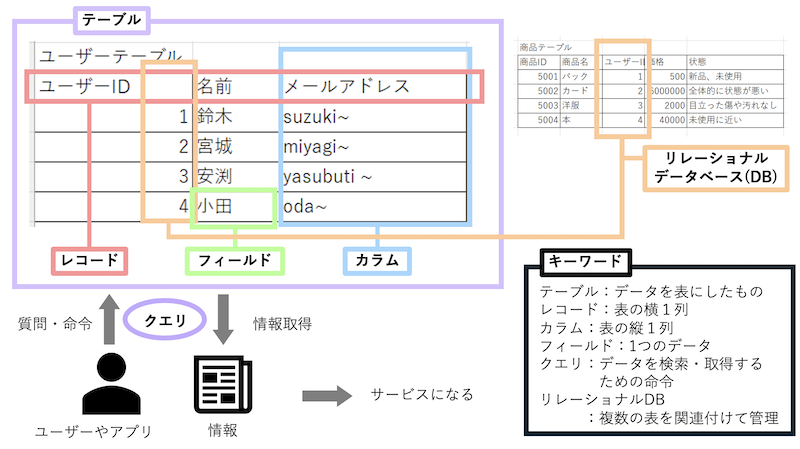

データベースとは
特定のルールに従って整理・蓄積されたデータの集まりです。
単に情報をため込むだけでなく、大量のデータから目的の情報を
素早く検索・抽出・編集できるように工夫されています。
用途
大量の情報を整理して保管し「高速な検索」「複数人での安全な同時編集」「データの安全な管理」を行う
(例)顧客管理： 顧客の氏名、住所、購入履歴などを一元管理し、サポート対応やマーケティングに活用
仕組み
